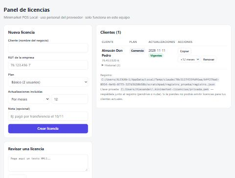
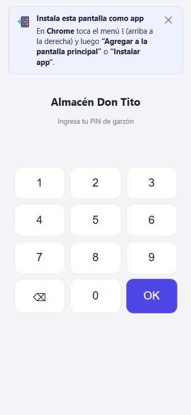
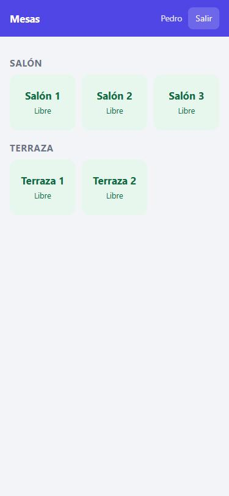
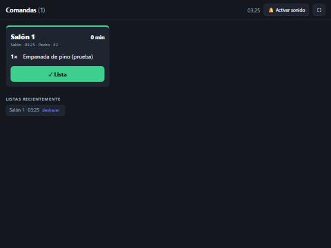
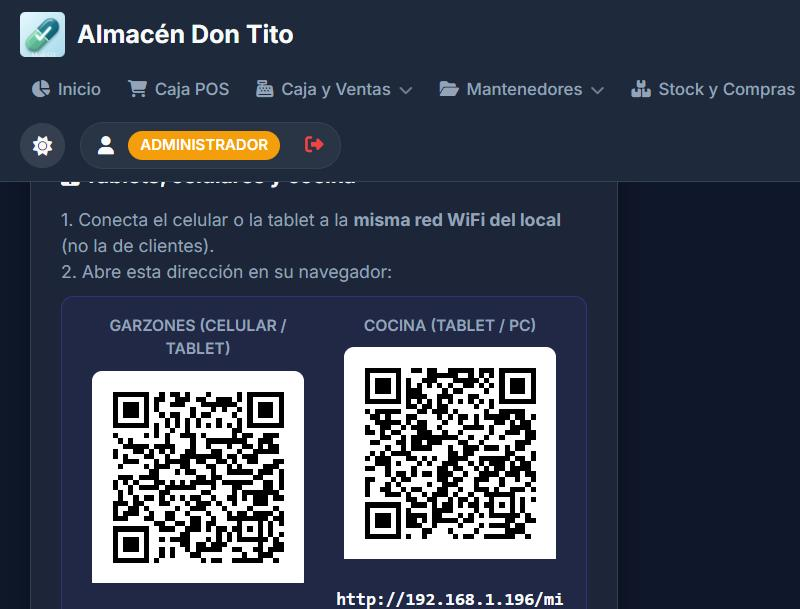
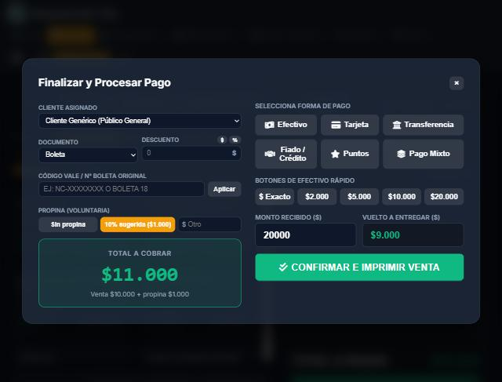
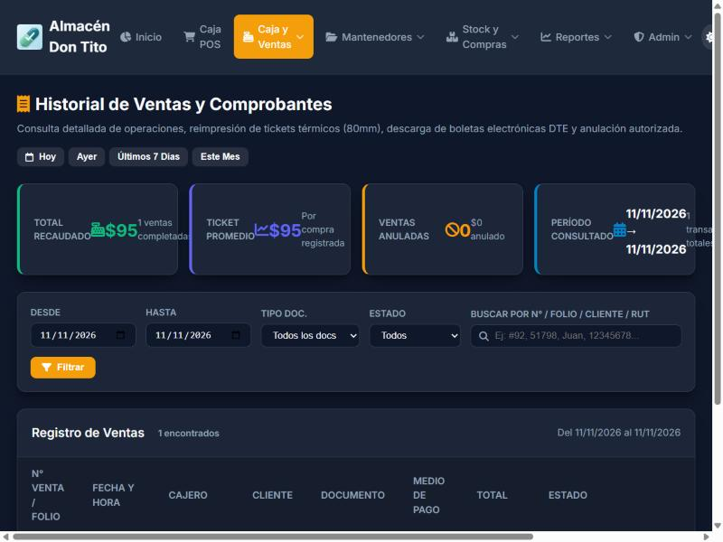

Este documento acompaña a DOCUMENTACION_TECNICA.md del repositorio, con el mismo contenido más ejemplos, diagramas y capturas reales del sistema. Los datos de los ejemplos son ficticios (negocio de prueba, RUT y contraseñas inventados).
Punto de venta para comercios chilenos pequeños (almacenes, minimarkets, botillerías y, con un módulo extra, locales de comida). Se instala en el computador del cliente como un programa de Windows y funciona sin internet, salvo para emitir boletas electrónicas.
Existe además un POS online (otro producto). Esta edición local está recortada a propósito para no competir con él:
| Básico (local) | Comercio (local) | POS online | |
|---|---|---|---|
| POS, caja, ventas, boleta e-Boleta | ✅ | ✅ | ✅ |
| Productos, stock simple, reportes de ventas | ✅ | ✅ | ✅ |
| Fiados, devoluciones, compras, kardex, inventario, promociones, actualizador de precios | — | ✅ | ✅ |
| Usuarios (sin contar garzones) | 2 | 3 | Sin límite |
| Supervisor, utilidades, varias cajas o sucursales, factura | — | — | ✅ |
Módulo extra (se vende aparte y se suma a cualquier plan): Mesas y garzones — pedidos desde celular o tablet, pantalla de cocina y comandas impresas.
Modelo comercial: licencia de por vida ligada al RUT del negocio, con actualizaciones incluidas por un período. Los cambios posteriores del SII se cobran como renovación de soporte.
| Cliente | Licencia | Lo que ve |
|---|---|---|
| Kiosco "Don Pedro", atiende solo | Básico | POS, caja, productos, boleta. Hasta 2 usuarios. |
| Almacén de barrio con libreta de fiados | Comercio | Además: Clientes y fiado, Compras, Kardex, Promociones… |
| Almacén en invierno + picada en verano | Comercio + Mesas | Además: botón Mesas en caja, pantallas de garzón y cocina, propina. |
El proyecto se desarrolla de forma iterativa e incremental: entregas pequeñas, cada una usable, probada y versionada. Cada fase se acordó con el dueño del producto antes de construirla (plan local → licencias → boleta → instalador → mesas → propina).
.env, licencias, llaves ni datos de clientes.| Nivel | Prueba real realizada |
|---|---|
| Sintaxis | php -l y node --check de cada archivo tocado. |
| Unidad | Firma SigV4 comparada con los vectores oficiales de AWS (get-vanilla, post-vanilla): coinciden. |
| Lógica | Armado del detalle con descuento global, granel, pack y exento: la suma siempre igual al total cobrado. |
| Escenarios | Simulador: emisión correcta, sin internet, sin respuesta, rechazo, venta anulada, sin licencia. |
| Integración | Venta real desde el POS en el navegador, ticket, filtro de Ventas, reintento manual. |
| Validación | Peticiones inválidas a propósito: doble cobro, sin token, propina a crédito… todas rechazadas sin dejar datos a medias. |
master. Cada versión publicada lleva una etiqueta (v4.0.0, v4.1.0).MAYOR.MENOR.PARCHE: MAYOR = cambio de edición o incompatible; MENOR = funciones nuevas compatibles; PARCHE = correcciones.feature/…, fix/…) y pull request con revisión antes de unir.b736da7 (tag: v4.1.0) v4.1.0: propina voluntaria y comprobante que se puede cerrar 97e24cb (tag: v4.0.0) v4.0.0: edición local con licencias, e-Boleta, instalador y módulo Mesas 5e3a614 Seguridad interna en Caja/Ventas, CSRF en Productos/Promociones y POS reordenado
La v4.0.0 es MAYOR (nace la edición local); la v4.1.0 es MENOR (agrega la propina sin romper nada).
| Capa | Tecnología | Por qué |
|---|---|---|
| Lenguaje servidor | PHP 8.1, sin framework | Ver 3.1. |
| Base de datos | MySQL 8 (InnoDB, utf8mb4) | Transacciones y bloqueo de filas (FOR UPDATE) para que dos ventas no descuenten el mismo stock ni dos garzones dupliquen una cuenta. |
| Servidor web | Apache 2.4 + mod_php | Estándar en Windows; .htaccess protege carpetas; se instala como servicio. |
| Interfaz | HTML + CSS + JavaScript sin framework | Sin paso de compilación; rápido en PCs modestos y pantallas táctiles. |
| Criptografía | OpenSSL | Firmas ECDSA de licencias y AES-256-GCM para la Clave Tributaria, sin extensiones extra. |
| HTTP saliente | cURL | Emisión de boletas con control de tiempos y clasificación de errores. |
| Instalador | Inno Setup 6 | Gratuito y maduro; genera un .exe estándar con lógica para servicios, actualizaciones y desinstalación. |
| Desarrollo | Laragon | Mismo stack que el instalador, listo en Windows. |
| Versiones | Git + GitHub | Historial, etiquetas, respaldo del código. |
El costo de no usar framework es implementar a mano lo que este daría (CSRF, protección de rutas, migraciones). Está resuelto en includes/auth.php, includes/licencia.php e instalador/configurar.php.
La protección por licencia de todas las pantallas y APIs vive en un solo mapa. Agregar un script nuevo a un módulo es una línea:
// includes/licencia.php const LICENCIA_SCRIPTS = [ 'clientes.php' => 'clientes', // plan Comercio 'actualizar_precios.php' => 'precios_rapidos', 'garzon.php' => 'mesas', // módulo extra 'cotizaciones.php' => 'cotizaciones', // solo POS online ]; // includes/auth.php (lo cargan todas las pantallas y APIs) proteger_acceso_red(); licencia_proteger_script_actual();
Las pantallas son formularios y listas con interacción moderada. Un framework obligaría a compilar y mantener otro ecosistema; con JavaScript del navegador se consigue lo necesario y el código se lee directo.
pantalla.php → controlador: valida, consulta la base, prepara variables ├─ includes/header.php → sesión, licencia, menú (incluye auth.php) ├─ views/pantalla.view.php → solo presentación (HTML) └─ includes/footer.php api/accion.php → endpoint JSON para fetch(), valida CSRF assets/js/*.js → interacción en el navegador
| Decisión | Motivo |
|---|---|
| Protección por licencia en un solo punto | Todas las pantallas y APIs cargan auth.php; un mapa decide el módulo de cada script. |
Boleta en cola (dte_emitidos) | La venta nunca se pierde por falta de internet. |
| Clasificar errores del SII | Reintentar solo cuando es seguro; nunca duplicar una boleta. |
| Propina fuera de la venta | No lleva IVA ni va en la boleta; se guarda aparte para la caja. |
Migraciones numeradas + tabla migraciones | Actualizar instalaciones sin perder datos. |
| Versión de CSS/JS por fecha de archivo | El navegador nunca usa una copia vieja tras actualizar. |
/ Pantallas (controladores): pos.php, caja.php, ventas.php, productos.php… ├── garzon.php, cocina.php Pantallas del módulo Mesas (celular / tablet / cocina) ├── instalar.php Asistente de primera instalación ├── manifest.php, sw.js App instalable (PWA) de garzón y cocina ├── ver_boleta.php Entrega el PDF de una boleta (requiere sesión) ├── api/ Endpoints JSON: registrar_venta, mesas, movimiento_stock… ├── views/ Vistas HTML de cada pantalla ├── assets/ css/, js/ (pos.js, mesas_caja.js, ui.js), img/, vendor/ ├── config/database.php Conexión, APP_VERSION, novedades, asset_url(), zona horaria ├── includes/ │ ├── auth.php Sesión, CSRF, contraseñas, protección de red y licencia │ ├── licencia.php Licencias, planes, módulos, IP del equipo │ ├── qr.php Generador de códigos QR sin dependencias │ ├── app_instalable.php Instalar garzón/cocina como app │ └── sii/ EBoletaCliente.php, EBoletaCola.php, Cifrado.php ├── db/migrations/ 0001 … 0013 (cambios de esquema en orden) ├── db/instalacion/ 01_esquema.sql y 02_datos_base.sql (equipos nuevos) ├── scripts/ emitir_pendientes.php, respaldo.php, restablecer_clave.php ├── storage/boletas/ PDF de boletas (privado, no se versiona) ├── instalador/ preparar, configurar, compilar, minimarket.iss, abrir.vbs └── tools/licencias/ HERRAMIENTA DEL PROVEEDOR (no se instala en clientes)
.env, config/licencia.lic, config/clave_cifrado.key, config/eboleta_sesion.json, config/instalado.lock, storage/boletas/, uploads/, instalador/paquete/, instalador/salida/.Tamaño aproximado: ~20.600 líneas de PHP, ~2.500 de JavaScript, ~40 tablas, 13 migraciones.
includes/auth.phprequireLogin() y checkRole().password_hash. verificarPasswordUsuario() acepta por única vez claves antiguas en texto plano y las convierte a hash.csrfField()/verifyCsrf(); APIs con cabecera X-CSRF-Token y verifyCsrfApi().$_SESSION['garzon']), entran solo con PIN a garzón/cocina.includes/licencia.php y tools/licencias/Formato MML1.<datos base64url>.<firma>, firmado con ECDSA P-256 / SHA-256. El sistema trae solo la clave pública; la privada está en el PC del proveedor, fuera del repositorio. La licencia solo es válida si su RUT coincide con el del negocio.
// Texto que se entrega al cliente (acortado): MML1.eyJ2IjoxLCJjbGllbnRlIjoiQWxtYWPDqW4gRG9uIFBlZHJvIi….MEUCIQC… // └ formato └ datos (JSON en base64url) └ firma ECDSA // Datos decodificados: { "cliente": "Almacén Don Pedro", "rut": "76123456-0", "plan": "comercio", "extras": ["mesas"], "actualizaciones_hasta": "2027-11-13", "emitida": "2026-11-13" }
| Situación | Resultado |
|---|---|
| Licencia correcta y RUT del negocio = 76.123.456-0 | válida plan Comercio + Mesas |
Alguien cambia "plan": "basico" por "comercio" | rechazada "La firma de la licencia no es válida" |
| Se copia la misma licencia a otro negocio (otro RUT) | rechazada "La licencia es para el RUT 76123456-0…" |
| Sin licencia | plan Básico y no emite boletas |

tools\licencias\abrir_panel.bat): crear, copiar, renovar, subir de plan y activar módulos extra.api/registrar_venta.phpTodo ocurre en una transacción:
FOR UPDATE) y recalcula precios en el servidor (no confía en el navegador); aplica promociones si el plan las incluye.COMMIT. Después encola y emite la boleta (límite de 12 s).// POST api/registrar_venta.php // Cabecera: X-CSRF-Token: … { "items": [{ "producto_id": 13, "cantidad": 4, "factor": 1 }], "tipo_documento": "Boleta", "descuento_global": 0, "propina": 1000, "pagos": [{ "metodo": "Efectivo", "monto": 11000 }], "monto_pagado": 20000, "vuelto": 9000 }
// Respuesta { "success": true, "venta_id": "114", "total": 10000, "propina": 1000, "vuelto": 9000, "dte": { "success": true, "estado": "Emitida", "folio": 9, "pdf_url": "ver_boleta.php?dte=…" } }
includes/sii/| Archivo | Función |
|---|---|
EBoletaCliente.php | Habla con e-Boleta del SII: login, credenciales temporales de AWS (Cognito), firma SigV4 propia, datos del emisor y emisión. |
EBoletaCola.php | Cola sobre dte_emitidos: arma el detalle, emite, reintenta y guarda el PDF. Incluye simulador. |
Cifrado.php | AES-256-GCM con llave propia del equipo para la Clave Tributaria y la sesión. |
| Hora | Qué pasa | Estado |
|---|---|---|
| 15:02 | Venta #210. El SII no responde en 12 s (sin internet). La venta se guarda y el ticket dice "Boleta en proceso…". | Pendiente |
| 15:04 | La tarea de fondo intenta; sigue sin internet. Se detiene sin probar las demás. | Pendiente |
| 15:20 | Ventas #211 y #212, igual. | Pendiente |
| 15:36 | Vuelve internet. La tarea emite #210, #211, #212 en orden. | Emitida |
Venta de $10.750 con $1.000 de descuento global (total cobrado $9.750). El SII exige que la suma de los ítems sea igual al total, así que el descuento se reparte en proporción:
| Ítem | Cant. × precio | Descuento repartido | MontoItem |
|---|---|---|---|
| Aceite | 2 × $2.990 | $557 | $5.423 |
| Pan | 1 × $1.500 | $139 | $1.361 |
| Leche | 3 × $1.090 | $304 | $2.966 |
| Suma | $9.750 = total cobrado ✓ | ||
api/mesas.php: única API del módulo, con permisos separados (garzón con PIN / caja con sesión, solo desde el PC).mesas, mesapedidos (cuenta), comandas, mesapedidosdetalle.



ControlaStock = 0 (platos, servicios) no descuentan ni aparecen en alertas.El sistema dice 8 aceites; al contar hay 6. En Productos → ± → "Ajustar a conteo" se escribe 6: se registra una salida de 2 en el kardex con motivo "Ajuste a conteo físico" y el stock queda en 6.
Configurable (PROPINA_ACTIVA, PROPINA_PORCENTAJE). Se guarda en ventas.Propina; los pagos registran el dinero real recibido, así el arqueo cuadra; la boleta usa solo el total de la venta. No se permite a crédito/puntos ni mayor que el consumo.

| Consumo (venta) | $10.000 |
| Propina 10% sugerida | $1.000 |
| Total a cobrar | $11.000 |
| Paga con | $20.000 → vuelto $9.000 |
| Pago registrado (caja) | Efectivo $11.000 |
| Boleta al SII | $10.000 (sin propina) |
| Cierre de turno | "Propinas del turno: $1.000" |
instalador/| Archivo | Función |
|---|---|
compilar.php | Un comando: lee APP_VERSION, arma el paquete y compila con Inno Setup. |
preparar.php | Copia lo justo de PHP, Apache y MySQL + el sistema (sin herramientas, git ni datos). |
configurar.php | Al instalar: configuraciones, MySQL, servicios, base y .env con contraseñas aleatorias, migraciones con respaldo previo, tareas y firewall. Idempotente; modo --probar sin administrador. |
minimarket.iss | Inno Setup: servicios, accesos directos, actualización y desinstalación. |
abrir.vbs | Abre el sistema en Edge modo app con impresión directa (--kiosk-printing). |
C:\MinimarketPOS\ ├── app\ el sistema (app\.env generado: DB_PORT=3307, DB_USER=minimarket, DB_PASS=<aleatoria>) ├── php\ apache\ mysql\ componentes portables ├── datos\mysql\ la base de datos datos\instalacion.json contraseñas de MySQL ├── respaldos\ minimarket_local_2026-11-13_233000.sql.gz … └── logs\ instalacion.log, apache_error.log, php_error.log, mysql_error.log
| Canal | Formato | Uso |
|---|---|---|
| Formularios HTML (POST) | form-urlencoded + csrf_token | Configuración, productos, usuarios, caja. |
fetch() a api/*.php | JSON + cabecera X-CSRF-Token | Venta, búsqueda, mesas, stock, boletas. Respuesta { "success", "error", … }. |
| Polling (consulta periódica) | JSON | Garzón: mesas cada 10 s · Cocina: comandas cada 5 s · Caja: comandas nuevas cada 8 s. |
Se eligió polling en vez de WebSockets: más simple, sin servicios adicionales y suficiente para un local.
// POST api/mesas.php?action=enviar (sesión de garzón + X-CSRF-Token) { "mesa_id": 4, "items": [ { "producto_id": 13, "cantidad": 2, "nota": "bien cocidas" } ] } // Respuesta { "success": true, "pedido_id": 7, "comanda_id": 31, "mesa": "Terraza 2", "total": 5000, "lineas": [ … ] }
127.0.0.1. Con "tablets y celulares" escucha en la red y se crea una regla de firewall solo para redes privadas.garzon.php, cocina.php y api/mesas.php; el resto da 403.127.0.0.1:3307.ips_del_equipo() detecta la tarjeta que sale al router (no la de VirtualBox o VPN) y la muestra con QR.| Dirección pedida | Respuesta |
|---|---|
http://192.168.1.196:8090/garzon.php | 200 pantalla de garzón |
http://192.168.1.196:8090/cocina.php | 200 pantalla de cocina |
http://192.168.1.196:8090/pos.php | 403 "Solo disponible en el computador de caja" |
http://192.168.1.196:8090/.env | 403 archivo protegido |
| Tarea | Frecuencia | Qué hace |
|---|---|---|
scripts/emitir_pendientes.php | cada 2 min | Emite pendientes en orden; se detiene ante un problema general. Bloqueo de archivo: nunca dos a la vez. |
scripts/respaldo.php | diario 23:30 | mysqldump comprimido, guarda 30 días; contraseña por variable de entorno. |
utf8mb4_unicode_ci. ~40 tablas.productos, productoscodigos, ventas, detalleventas, pagosventa, turnos, movimientoscaja, kardex, ajustesstock, dte_emitidos, configuraciones, usuarios, roles, mesas, mesapedidos, comandas, mesapedidosdetalle.configuraciones (clave / valor).db/migrations/NNNN_descripcion.sql en orden; nunca se modifica una publicada.01_esquema.sql + 02_datos_base.sql y todas quedan marcadas como aplicadas.configurar.php respalda y aplica las que falten, registrándolas en la tabla migraciones.-- db/migrations/0013_propina.sql ALTER TABLE ventas ADD COLUMN Propina INT NOT NULL DEFAULT 0 AFTER MontoTotal; INSERT IGNORE INTO configuraciones (Clave, Valor, Descripcion) VALUES ('PROPINA_ACTIVA', 'NO', 'Ofrecer propina voluntaria en la pantalla de pago'), ('PROPINA_PORCENTAJE', '10', 'Porcentaje de propina sugerida');
Registro real al actualizar un cliente de v4.0.0 a v4.1.0:
Migraciones por aplicar: 0013_propina.sql. Respaldando antes... Respaldo OK: minimarket_local_2026-11-13_011353.sql.gz (10 KB) aplicada 0013_propina.sql
mysql siempre con --default-character-set=utf8mb4. Sin eso, "Garzón" se guardó como "Garz├│n".| Medida | Dónde |
|---|---|
Contraseñas con password_hash; sin claves universales | auth.php, usuarios.php, instalar.php |
| CSRF en formularios y APIs | auth.php |
| Bloqueo por intentos fallidos (login y PIN) | auth.php, api/mesas.php |
.htaccess: niega archivos ocultos, SQL, licencias, etc., y carpetas privadas | raíz, config/, db/, includes/, scripts/, tools/, storage/ |
| Acceso de red limitado a garzón/cocina; MySQL solo local | licencia.php, configurar.php |
| Clave Tributaria cifrada (AES-256-GCM, llave por equipo) | sii/Cifrado.php |
| Contraseñas de MySQL aleatorias por instalación | configurar.php |
| Licencias firmadas; clave privada fuera del repositorio | licencia.php, tools/licencias/ |
| Precios y totales recalculados en el servidor | api/registrar_venta.php |
| Asistente de instalación solo local y bloqueado al terminar | instalar.php |
| Intento | Respuesta del sistema |
|---|---|
| Entrar con la antigua clave "Demo1234" | Usuario o contraseña incorrectos |
| Enviar una venta sin token CSRF | Token de seguridad inválido |
| Cobrar dos veces la misma mesa | La cuenta de esta mesa ya fue cobrada o anulada (sin venta a medias) |
| Dejar propina a crédito | La propina no se puede dejar a crédito ni pagar con puntos |
Abrir compras.php con plan Básico | 403 — incluido en el plan Comercio |
C:\laragon.C:\laragon\www\minimarket-minimal..env.example a .env y completar credenciales con DB_NAME=minimarket_local.db/instalacion/01_esquema.sql y 02_datos_base.sql, o usar el asistente.# clonar git clone https://github.com/fcardenas886/minimarket-pos-local.git C:/laragon/www/minimarket-minimal # .env (desarrollo) DB_HOST=127.0.0.1 DB_PORT=3306 DB_NAME=minimarket_local DB_USER=root DB_PASS= # licencia de prueba por terminal (o tools\licencias\abrir_panel.bat) php tools/licencias/generar_licencia.php --cliente="Prueba" --rut=76.123.456-0 --plan=comercio --extras=mesas # recuperar el acceso de un usuario php scripts/restablecer_clave.php admin
php instalador/compilar.php
== Minimarket POS v4.1.0 ==
Paquete listo en instalador/paquete (142.6 MB sin comprimir)
Listo: instalador/salida/MinimarketPOS-Setup-4.1.0.exe (24.3 MB)
01_esquema.sql / 02_datos_base.sql.APP_VERSION y agregar sus novedades en config/database.php (única fuente de la versión).php -l, node --check y pruebas de los flujos tocados.php instalador/compilar.php.// config/database.php define('APP_VERSION', 'v4.2.0'); define('APP_CHANGELOG', [ 'v4.2.0' => [ 'Descripción de la novedad para el usuario…' ], … ]); # terminal php instalador/compilar.php git add -A && git commit -m "v4.2.0: …" git tag -a v4.2.0 -m "Minimarket POS v4.2.0" git push origin master && git push origin v4.2.0
Se entrega el .exe nuevo y se ejecuta encima. Se conservan base de datos, respaldos, .env, licencia y Clave Tributaria; las migraciones se aplican con respaldo previo.
| Necesidad | Cómo |
|---|---|
| Registro de instalación | C:\MinimarketPOS\logs\instalacion.log |
| Errores web / PHP / MySQL | logs\apache_error.log, php_error.log, mysql_error.log |
| Servicios | services.msc → MinimarketPOS-Web, MinimarketPOS-DB |
| Tareas | Programador de tareas → carpeta MinimarketPOS |
| Respaldos | C:\MinimarketPOS\respaldos\ (30 días); Inicio → "Respaldar ahora" |
| Cliente olvidó su clave | php\php.exe app\scripts\restablecer_clave.php <usuario> |
| Boletas pendientes o con error | Ventas → "boletas con problemas"; Configuración → Boleta Electrónica |
| Activar / renovar / cambiar plan | Panel de licencias → el cliente pega en Admin → Licencia |
| Tablets no conectan | Red de Windows privada, instalado con "acceso de red", usar dirección o QR de Configuración |

| Tema | Riesgo / estado | Mitigación o siguiente paso |
|---|---|---|
| e-Boleta no oficial | El SII puede cambiar su sistema sin aviso. | Las ventas siguen y las boletas quedan pendientes; actualizar EBoletaCliente.php. Evaluar proveedor oficial o LibreDTE (licencia AGPL a revisar). |
| Software propio certificado | Esas empresas no pueden usar e-Boleta. | Segundo método de emisión con certificado y CAF si hay demanda. |
| Código PHP legible | Puede modificarse en el cliente. | Licencia ligada al RUT; evaluar ofuscación si hiciera falta. |
| Sin pruebas automatizadas | Regresiones dependen de pruebas manuales. | PHPUnit para cola de boletas, licencias, totales y propina. |
| Instalador sin firma | Aviso de SmartScreen. | Certificado de firma de código (~100–400 USD/año). |
| MySQL redistribuido | Más pesado; licenciamiento a revisar. | Cambiar a MariaDB. |
| Soporte al actualizar | El instalador aún no exige actualizaciones_hasta vigente. | Verificación en PrepareToInstall. |
App Android por http | Se instala con barra del navegador. | Ajuste de Chrome por equipo o HTTPS local. |
| Propina en pago mixto | No se separa por medio de pago en reportes. | Guardar el medio de la propina si se necesita. |
| Datos de desarrollo | La base de desarrollo tiene datos de prueba. | Nunca usarla con clientes; el instalador crea una limpia. |
| Término | Significado |
|---|---|
| SII | Servicio de Impuestos Internos de Chile. |
| e-Boleta | Sistema gratuito del SII para emitir boletas electrónicas (eboleta.sii.cl). |
| DTE | Documento Tributario Electrónico (boleta 39, boleta exenta 41, factura 33). |
| Folio | Número correlativo que el SII asigna a cada boleta. |
| CAF | Código de Autorización de Folios (solo software propio; no aplica a e-Boleta). |
| RUT | Rol Único Tributario. |
| Fiado | Venta a crédito interno a un cliente de confianza. |
| Arqueo | Conteo del dinero de la caja al cerrar el turno. |
| Comanda | Pedido que el garzón envía a la cocina. |
| Kardex | Registro de cada entrada y salida de stock. |
| SigV4 | Método de firma de peticiones de AWS (usado por e-Boleta). |
| PWA | Aplicación web que se instala en el celular con su ícono. |
| Migración | Archivo SQL que cambia la base de forma ordenada y versionada. |
| Polling | Consultar al servidor cada cierto tiempo si hay novedades. |